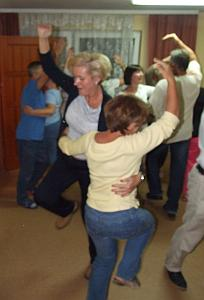
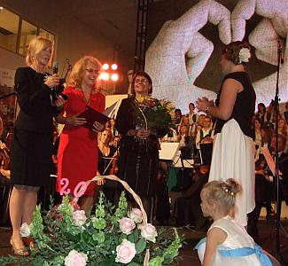

A tymczasem w Cameracie...
.
2014-09-19 do 21
piątekPrzyjeżdżamy po południu do Wiśniowej. Zakwaterowanie w pokojach, kolacja i do pracy. Pracujemy w sekcjach. Panie z dyrygentką, panowie z Zenkiem naszym basem.

I śpiewamy tańcząc :)
sobota
Wstajemy o 7.00 i schodzimy na śniadanie. Po śniadaniu chwila przerwy, zabieramy nuty i na próbę. Dzisiaj dalej pracujemy w sekcjach. Zaglądam po cichutku do panów. pracują ciężko w skupieniu, bo Kantata, to „nie przelewki”. Wiemy, że Jasio spóźnił się o dzień, ale żeby tak od razu do kąta, na kolana i za karę przepisywać nuty??? Wracam do pań, bo ja też muszę się uczyć, żeby nie trafić do kąta :) Przerwa na obiad i chwilę odpoczynku po. Zaczynamy po obiedzie wszyscy. Dyrygentka uśmiechnięta, Andrzej gra, chór się „sadowi”. Zobaczymy jak nam poszło i czy ten uśmiech na twarzy dyrygentki zostanie:) ??? Markowi się podobało. Koniec prób na dzisiaj. Idziemy na spacer przed kolacją. Piękny kościół, niestety zamknięty i nieoświetlony.

Wracamy do Wiśniowej na warsztaty. Camerata grilluje tańczy i śpiewa.
Dzisiaj śpimy o 1 godz. dłużej, śniadanie o 9.00. Jakoś nie wyglądają, że o godzinę dłużej spały.


© Stowarzyszenie Muzyczne Chór Camerata Wieliczka
Projekt i wykonanie:  Prowadzenie strony: Małgorzata Wysocka-Cebula
Prowadzenie strony: Małgorzata Wysocka-Cebula